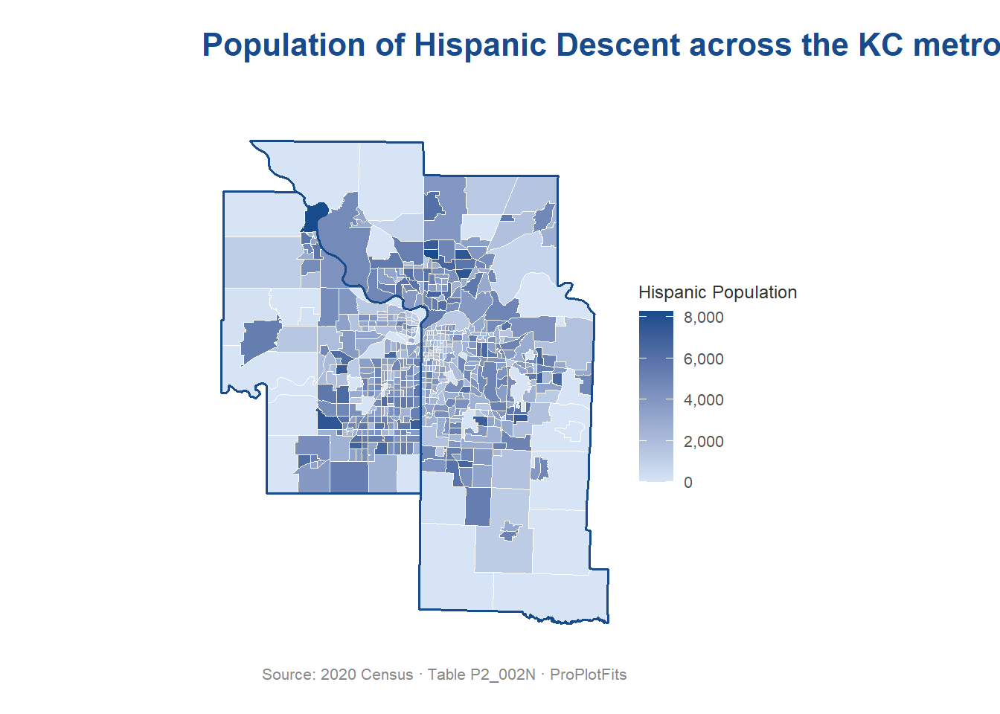

Code
library(tidyverse)Warning: package 'tidyverse' was built under R version 4.5.2Warning: package 'lubridate' was built under R version 4.5.2── Attaching core tidyverse packages ──────────────────────── tidyverse 2.0.0 ──
✔ dplyr 1.1.4 ✔ readr 2.1.5
✔ forcats 1.0.1 ✔ stringr 1.5.2
✔ ggplot2 4.0.0 ✔ tibble 3.3.0
✔ lubridate 1.9.4 ✔ tidyr 1.3.1
✔ purrr 1.1.0
── Conflicts ────────────────────────────────────────── tidyverse_conflicts() ──
✖ dplyr::filter() masks stats::filter()
✖ dplyr::lag() masks stats::lag()
ℹ Use the conflicted package (<http://conflicted.r-lib.org/>) to force all conflicts to become errorsCode
library(tidycensus)Warning: package 'tidycensus' was built under R version 4.5.2Code
library(sf)Warning: package 'sf' was built under R version 4.5.2Linking to GEOS 3.13.1, GDAL 3.11.4, PROJ 9.7.0; sf_use_s2() is TRUECode
library(tigris)Warning: package 'tigris' was built under R version 4.5.2To enable caching of data, set `options(tigris_use_cache = TRUE)`
in your R script or .Rprofile.Code
options(tigris_use_cache = TRUE)
# Pull state boundaries for MO and KS
state_borders <- states(cb = TRUE, year = 2020) %>%
filter(STUSPS %in% c("MO", "KS")) %>%
st_transform(crs = 4326)
# -------------------------------------------------------------
# Census variable: B16001_003E
# "Speak Spanish" — from table B16001 (Language Spoken at Home)
# ACS 5-year estimates
# -------------------------------------------------------------
# Set your Census API key if not already done:
# census_api_key("my_key", install = TRUE)
kc_counties <- list(
MO = c("Jackson", "Clay", "Platte", "Cass"),
KS = c("Johnson", "Wyandotte", "Leavenworth")
)
pull_hispanic_pop <- function(state, counties) {
get_decennial(
geography = "tract",
variables = c(hispanic_pop = "P2_002N"),
state = state,
county = counties,
year = 2020,
sumfile = "dhc",
geometry = TRUE
)
}
kc_mo <- pull_hispanic_pop("MO", kc_counties$MO)Getting data from the 2020 decennial Census
Using the Demographic and Housing Characteristics File
Note: 2020 decennial Census data use differential privacy, a technique that
introduces errors into data to preserve respondent confidentiality.
ℹ Small counts should be interpreted with caution.
ℹ See https://www.census.gov/library/fact-sheets/2021/protecting-the-confidentiality-of-the-2020-census-redistricting-data.html for additional guidance.Code
kc_ks <- pull_hispanic_pop("KS", kc_counties$KS)Getting data from the 2020 decennial Census
Using the Demographic and Housing Characteristics FileCode
# Dissolve county tracts to state-level outlines (only your 7 counties)
mo_outline <- kc_mo %>% st_union()
ks_outline <- kc_ks %>% st_union()
kc_metro <- bind_rows(kc_mo, kc_ks) %>%
st_transform(crs = 4326)
# -------------------------------------------------------------
# Royal Blue palette
# Official KC Royals Royal Blue: #174B8B
# Build a sequential ramp from near-white to full Royal Blue
# -------------------------------------------------------------
royal_blue_dark <- "#174B8B"
royal_blue_light <- "#D6E4F5"
ggplot(kc_metro) +
geom_sf(
aes(fill = value),
color = "white",
linewidth = 0.15
) +
geom_sf(
data = mo_outline,
fill = NA,
color = royal_blue_dark,
linewidth = 0.6
) +
geom_sf(
data = ks_outline,
fill = NA,
color = royal_blue_dark,
linewidth = 0.6
) +
scale_fill_gradient(
low = royal_blue_light,
high = royal_blue_dark,
na.value = "#EEEEEE",
name = "Hispanic Population",
labels = scales::comma
) +
labs(
title = "Population of Hispanic Descent across the KC metro by Census Tract",
subtitle = "",
caption = "Source: 2020 Census · Table P2_002N · ProPlotFits"
) +
theme_void(base_family = "sans") +
theme(
plot.title = element_text(size = 16, face = "bold",
color = royal_blue_dark, margin = margin(b = 6)),
plot.subtitle = element_text(size = 10, color = "#555555", margin = margin(b = 12)),
plot.caption = element_text(size = 8, color = "#888888", margin = margin(t = 10)),
legend.position = "right",
legend.title = element_text(size = 9, color = "#333333"),
legend.text = element_text(size = 8, color = "#555555"),
plot.margin = margin(16, 16, 16, 16)
)